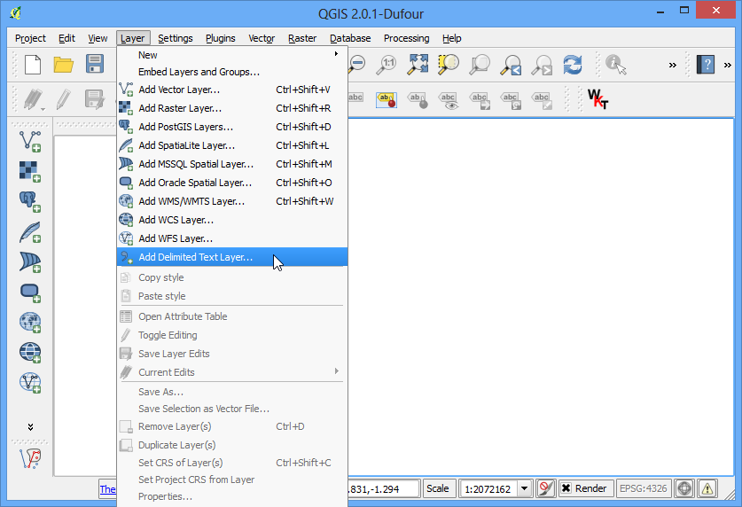

Realizzare Heatmaps (mappe di concentrazione)
[ Download PDF A4 Letter ]
Le Heatmaps (o Mappe di Concentrazione) sono uno degli strumenti più potenti di visualizzazione di densi set di dati puntuali. Le mappe di concentrazione sono di solito utilizzate per individuare facilmente i cluster (ovvero dei raggruppamenti) lì dove è presente un’alta concentrazione di dati o fenomeni. Sono molto utili anche per la cluster analysis o hotspot analysis.
Descrizione dell’esercizio
Lavoreremo con un dataset sugli eventi criminosi avvenuti nella zona del Surrey, Regno Unito, nell’anno 2011. Individueremo quindi le aree a maggiore attività criminale nel paese.
Procedimento
Per iniziare, estraiamo i dati compressi del file zip ottenuto in una cartella stabilita. I dati sono forniti in formato CSV. Importeremo questi dati all’interno di QGIS. (vedete importare_fogli_elettronici_o_ csv. per maggiori dettagli). Click .

Individuate il file police-uk-crime-data-surrey.txt e apritelo. Nella finestra di dialogo selezionate CSV (valori separati da virgola) come formato. Vedrete formarsi automaticamente le colonne relative al Campo X e al Campo Y come Easting e Northing. Accertatevi che la casella Usa indice spaziale sia spuntata perché questo renderà più veloci le operazioni su questo layer. Fate click OK.

Potrebbero comparire alcuni messaggi di errore. Per quelli che sono gli obiettivi di questo tutorial potete ignorarli. Fate click su Close.

Il prossimo passo è quello di scegliere il Sistema di Riferimento (SR). . Se leggete la descrizione dei dati, noterete che il riferimento spaziale è British National Grid. Scegliete OSGB 1936/British National Grid come SR. Click su OK.

Adesso potrete vedere i dati caricati in QGIS.

Fate uno zoom per vedere i dati più da vicino. Noterete che i dati sono molto densi ed è molto difficile immaginare dove possa essere situata un’alta concentrazione di punti. Ed è proprio in questi frangenti che una mappa di concentrazione risulta utile.

- To create the heatmap, you need to enable a core plugin named Heatmap. See Usare i Plugins to know how to enable built-in plugins. Once you have enabled the plugin, go to .
Avvertimento
The Heatmap plugin has a bug in QGIS 2.8.1. See this post for workarounds.

Nelle finestra Plugin per la mappa di concentrazione scegliete crime_heatmap come nome per il Raster di output.Inserite 1000 e poi scegliete unità di mappa nelle due caselle accanto alla voce Raggio. Il raggio definisce l’area intorno ciascun punto in base alla quale verrà calcolata la densità per ciascun pixel. Spuntate la casella Avanzato in modo che sia possibile specificare la dimensione di uscita della nostra mappa di concentrazione. Inserite 100 come Dimensione cella X e 100 come Dimensione cella Y. Click su OK.

Quando il processo sarà concluso, vedrete una mappa di concentrazione in scala di grigi caricata nella finestra principale.

Rendiamo la nostra mappa di concentrazione più simile a quelle che siamo abituati a vedere solitamente. Click sul tasto destro del del layer della mappa di concentrazione e quindi click su Proprietà.

Nella scheda Stile selezionate Falso colore banda singola come tipo di visualizzazione. Poi, nella sezione Carica i valori min/max, selezionate la voce Attuale (più lento)) sotto la voce Accuratezza e fate click su Carica. Questo comando esaminerà la densità e troverà i valori minimi e massimi del pixel. Questi valori saranno usati per generare una scala di colore appropriata. Nella sezione Genera nuova mappa di colore selezionate YlOrRd (Yellow-Orange-Red) come scala di colore e fate click su Classifica. Click su OK.

- Now you will see a more appealing heatmap-like rendering of the layer. You can select the Identify tool and click on any pixel of the heatmap. You will see the pixel value in the resulting pop-up. This pixel-value is a measure of how many points from the source layer are contained within the specified radius ( in our case - 1000m) around the pixel.

Ora avete dunque la vostra mappa di concentrazione. Essa è molto utile come strumento per un’interpretazione visiva, ma non proprio utilissima se è vostra intenzione utilizzare questi risultati in qualche tipo di analisi. In molti casi ci interessa soprattutto identificare gli hotspot, i punti caldi in cui la concentrazione di punti è più elevata. Ora, cercheremo di identificare questi punti caldi usando questa mappa di concentrazione. Andate su .

Per prima cosa occorre decidere un valore di soglia. Ciascun pixel dentro questo limite verrà considerato all’interno di un cluster. Usiamo un valore 5 per questi dati. Nella finestra di dialogo Calcolatore Raster, chiamiamo il layer di output con il nome di crime_hotspots. Fate doppio click su crime_heatmap@1 ed essa verrà portata automaticamente nell’area sottostante chiamata Espressione del Calcolatore Raster . Completate l’espressione con la formula “crime_heatmap@1” > 5. Assicuratevi che la casella Aggiungi al progetto sia barrata. Fate click su OK.

Un nuovo layer sarà aggiunto a QGIS. Questo layer ha pixel con valori alternativamente di 0 o di 1. Tutti i pixel nel layer di origine, in cui il valore di pixel è maggiore di 5, hanno valore 1, mentre tutti gli altri hanno valore 0. Fate click su .

Chiamate il file di output con il nome di crime_hotspots_vector. Barrate la casella vicino alla voce Nome Campo e quella vicino alla voce guilabel:Carica sulla mappa quando finito. Fate click su OK.

Una volta finita la conversione, avrete ancora un altro layer aggiunto a QGIS. Questa è la rappresentazione vettoriale dei cluster che sono stati creati nel passaggio precedente. Questo layer contiene clusters con valore 0 e valore 1. Togliamo via i valori 0, così avremo finalmente i clusters degli hotspot. Click sul tasto destro del layer e selezionate Apri tabella attributi.

Nella Tabella degli Attributi, fate click su Seleziona elemento usando un espressione.

Inserite l’espressione “DN” = 1 e fate click su Seleziona. Poi fate click su Chiudi.

Nella finestra principale, vedrete alcune geometrie colorarsi di giallo. Queste sono le geometrie che rispondono alla nostra query. Fate click sul layer e selezionate Salva la selezione con nome....

Chiamate il file di output con il nome di crime_clusters. Fate click sulla casella Aggiungi il file salvato alla mappa e fate click su OK.

Adesso avete il risultato. Il nostro layer finale contiene i punti caldi estratti dalla mappa di concentrazione. Questi cluster sono significato estratto da dati grezzi. Fornisce utili suggerimenti e può funzionare da input per ulteriori indagini.